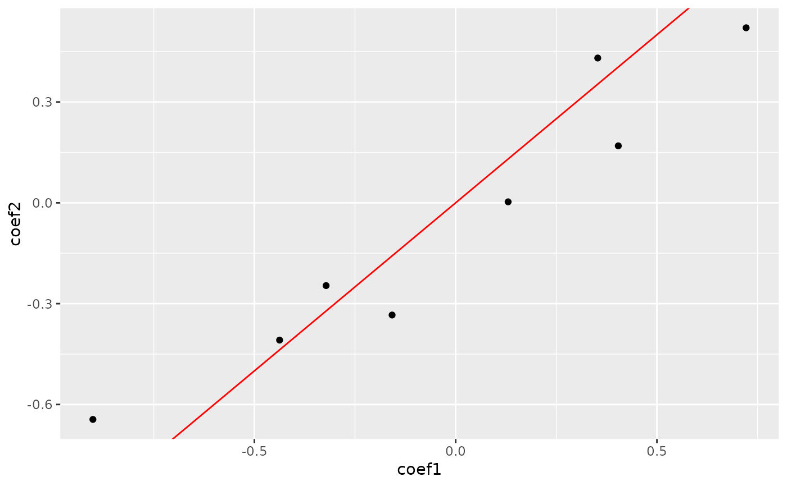
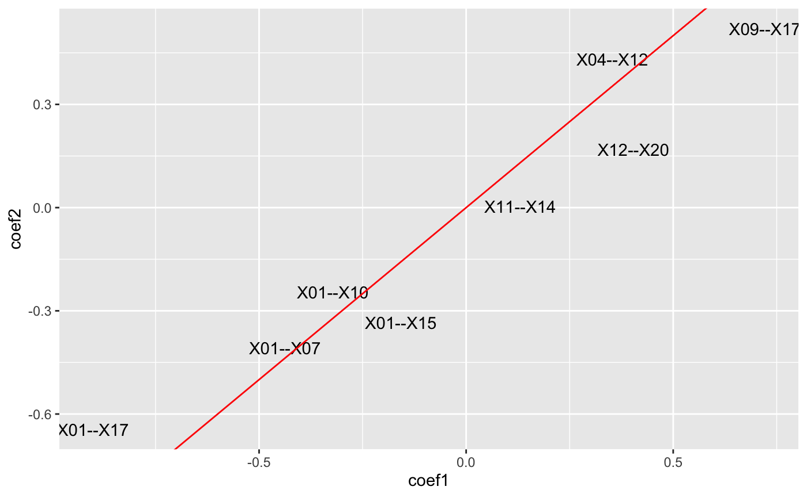
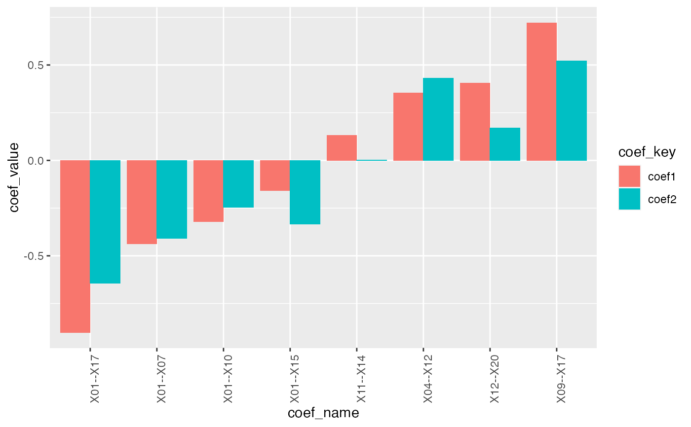
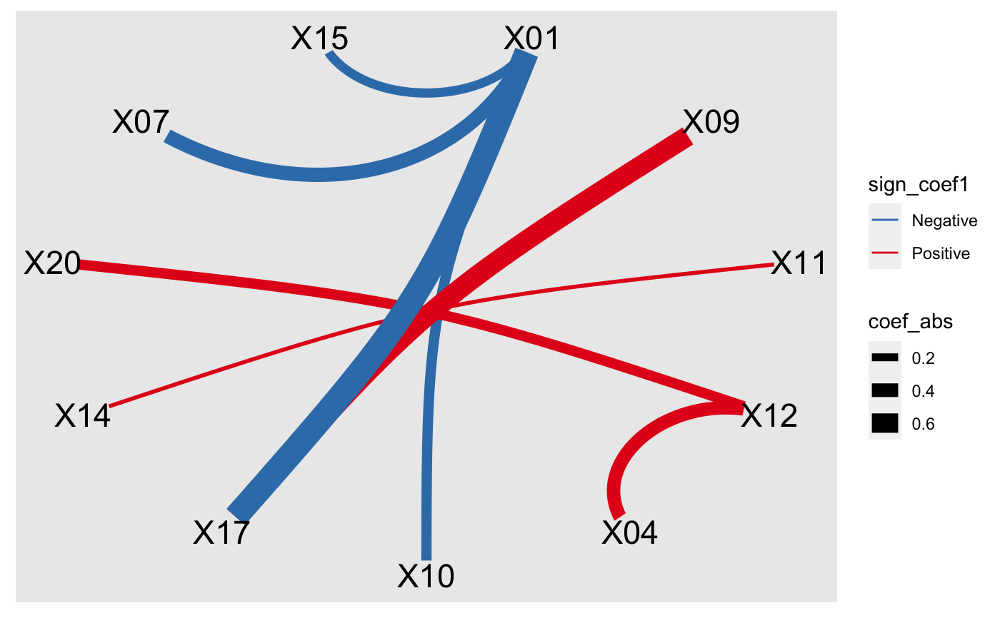

plot_cpop.RdPlot cpop coefficients
plot_cpop(cpop_result, type = "point", s = "lambda.min")
| cpop_result | The output of cpop_model |
|---|---|
| type | One of "point", "bar", "text" and "ggraph" |
| s | lasso s |
#> #> #>#> #> #>#> #> #>#> #> #>#> #> #>set.seed(1) z1 = pairwise_col_diff(x1) z2 = pairwise_col_diff(x2) cpop_result = cpop_model(z1, z2, y1, y2, alpha = 1, n_features = 10)#>#>#>#>#>#>#>#>#>#>#>#>#>#> #> -1 0 1 #> -1 0 0 1 #> 0 0 0 0 #> 1 3 0 0#>#>#> #> -1 0 1 #> -1 0 0 0 #> 0 0 0 0 #> 1 1 0 0#>#>#> #> -1 0 1 #> -1 0 0 0 #> 0 0 0 0 #> 1 0 0 0plot_cpop(cpop_result, type = "point")#> $plot#> #> $data #> # A tibble: 8 x 3 #> coef_name coef1 coef2 #> <fct> <dbl> <dbl> #> 1 X01--X10 -0.322 -0.246 #> 2 X09--X17 0.722 0.521 #> 3 X11--X14 0.130 0.00292 #> 4 X12--X20 0.404 0.170 #> 5 X01--X07 -0.437 -0.408 #> 6 X01--X15 -0.158 -0.334 #> 7 X01--X17 -0.901 -0.644 #> 8 X04--X12 0.353 0.431 #>plot_cpop(cpop_result, type = "text")#> $plot#> #> $data #> # A tibble: 8 x 3 #> coef_name coef1 coef2 #> <fct> <dbl> <dbl> #> 1 X01--X10 -0.322 -0.246 #> 2 X09--X17 0.722 0.521 #> 3 X11--X14 0.130 0.00292 #> 4 X12--X20 0.404 0.170 #> 5 X01--X07 -0.437 -0.408 #> 6 X01--X15 -0.158 -0.334 #> 7 X01--X17 -0.901 -0.644 #> 8 X04--X12 0.353 0.431 #>plot_cpop(cpop_result, type = "bar")#> $plot#> #> $data #> # A tibble: 16 x 3 #> coef_name coef_key coef_value #> <fct> <chr> <dbl> #> 1 X01--X10 coef1 -0.322 #> 2 X09--X17 coef1 0.722 #> 3 X11--X14 coef1 0.130 #> 4 X12--X20 coef1 0.404 #> 5 X01--X07 coef1 -0.437 #> 6 X01--X15 coef1 -0.158 #> 7 X01--X17 coef1 -0.901 #> 8 X04--X12 coef1 0.353 #> 9 X01--X10 coef2 -0.246 #> 10 X09--X17 coef2 0.521 #> 11 X11--X14 coef2 0.00292 #> 12 X12--X20 coef2 0.170 #> 13 X01--X07 coef2 -0.408 #> 14 X01--X15 coef2 -0.334 #> 15 X01--X17 coef2 -0.644 #> 16 X04--X12 coef2 0.431 #>plot_cpop(cpop_result, type = "ggraph")#> $plot#> #> $data #> # A tibble: 8 x 7 #> from to coef1 coef2 coef_avg coef_abs sign_coef1 #> <chr> <chr> <dbl> <dbl> <dbl> <dbl> <chr> #> 1 X01 X10 -0.322 -0.246 -0.284 0.284 Negative #> 2 X09 X17 0.722 0.521 0.621 0.621 Positive #> 3 X11 X14 0.130 0.00292 0.0666 0.0666 Positive #> 4 X12 X20 0.404 0.170 0.287 0.287 Positive #> 5 X01 X07 -0.437 -0.408 -0.423 0.423 Negative #> 6 X01 X15 -0.158 -0.334 -0.246 0.246 Negative #> 7 X01 X17 -0.901 -0.644 -0.773 0.773 Negative #> 8 X04 X12 0.353 0.431 0.392 0.392 Positive #>